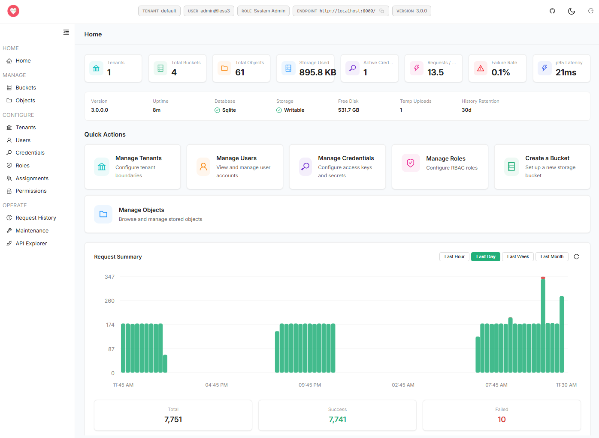
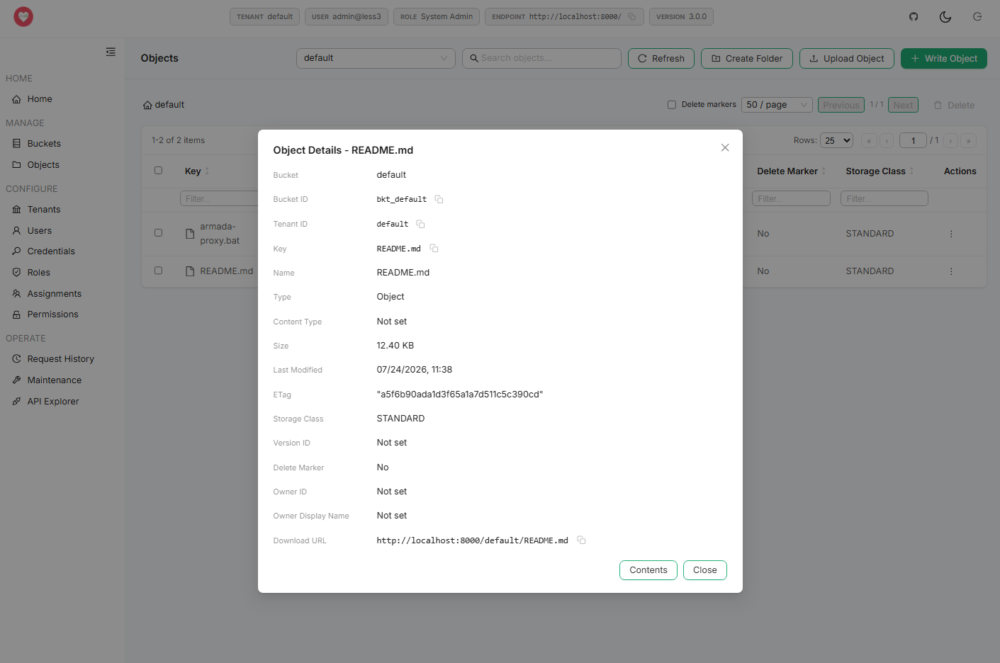
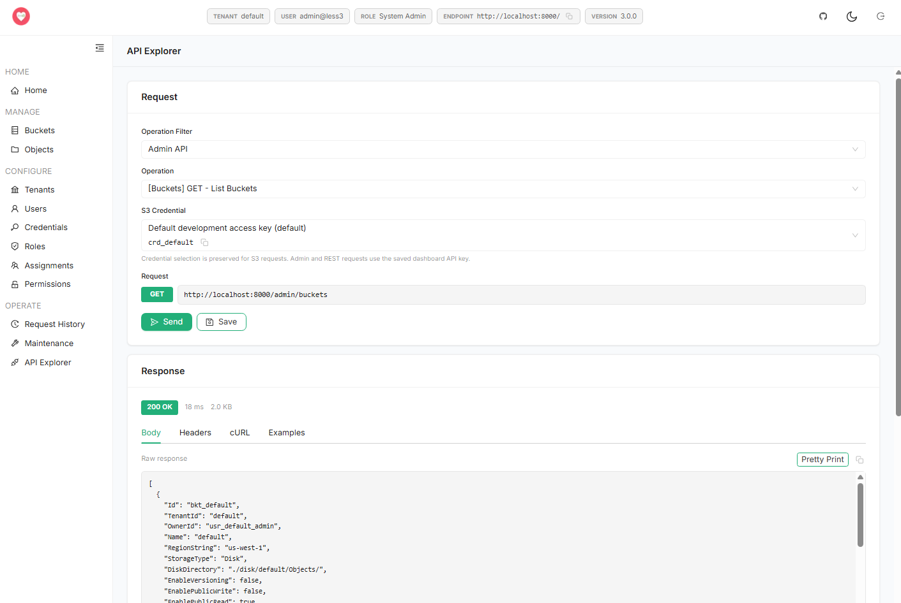

Develop locally without cloud dependencies
Build and test against an S3-compatible endpoint without requiring a cloud account, shared test bucket, or production data.

Open-source S3-compatible object storage
Run an S3-compatible object store on a laptop, virtual machine, container, or server. Keep familiar SDKs and workflows while choosing where your objects and metadata live.
Review S3 Compatibilitygit clone https://github.com/jchristn/less3
cd less3/Docker
docker compose up -d
aws --endpoint-url http://localhost:8000 s3 lsWhy Less3
Development machines, private networks, remote sites, and controlled environments still need practical object storage. Less3 provides a familiar S3-compatible interface backed by infrastructure you operate.
Build and test against an S3-compatible endpoint without requiring a cloud account, shared test bucket, or production data.
Place object storage alongside the application when locality, isolation, connectivity, or operational control matters.
Connect with documented AWS SDK, AWS CLI, MinIO Client, S3 browser, or direct REST workflows instead of inventing a new storage integration.
Use the browser dashboard for day-to-day work and administrative APIs for automation.
Own the storage. Keep the workflow.
Use Cases
Run a predictable local endpoint, create disposable buckets and objects, and exercise supported S3 behavior without touching a shared cloud environment.
Your integration tests should not need a production bucket.Start a clean Less3 instance inside a build pipeline, run storage integration tests in isolation, and dispose of the environment when the job finishes.
A clean S3-compatible target for every build.Expose an S3-compatible storage interface from hardware your organization already operates and choose the metadata database that fits the deployment.
Give internal applications a familiar object-storage interface on infrastructure you control.Deploy object storage close to applications in remote, isolated, or connectivity-constrained locations where data placement must remain explicit.
Bring a familiar storage API to the data.Compatibility
For an S3-compatible platform, behavior matters more than a logo. Less3 publishes the operations it supports, the clients it tests, and the places where its behavior differs from AWS S3.
Less3 implements a documented subset of the S3 API. It does not claim complete parity with AWS S3. Supported operations, tested clients, and known behavioral differences are published so teams can evaluate compatibility before adopting it.
Dashboard
Understand activity, manage storage, administer access, and exercise supported APIs from a browser.


Review bucket, object, and storage totals alongside request activity over selectable time ranges.
Browse objects and virtual folders, upload and download files, inspect or edit supported text content, manage tags and ACLs, and perform bulk actions.
Create and update users, tenants, access keys, secret keys, roles, permissions, and assignments through the administrative surface.
Select supported S3 or administrative operations, choose credentials, submit requests, inspect headers and bodies, and format structured responses.
Deploy
Run Less3 as a .NET service or deploy the server and dashboard with Docker Compose. Use lightweight defaults for development, then move configuration, metadata, and object storage onto persistent infrastructure.
Choose the metadata backend appropriate to the deployment without changing the client-facing S3-compatible endpoint.
Use the URL convention that matches the environment and client configuration.
Open Source
Less3 is MIT licensed. Inspect it, modify it, embed it, redistribute it, or contribute improvements back to the project.
Use, modify, distribute, or embed Less3 under the MIT license while retaining the required notice.
Supported APIs, test commands, changelog entries, and compatibility issues are visible in the repository.
Focused pull requests, reproducible bug reports, and documented enhancement proposals are encouraged.
Quick Start
On first launch, the setup flow creates the initial server configuration, metadata database, and sample data needed to verify the endpoint. Review and replace development defaults before broader use.
git clone https://github.com/jchristn/less3
cd less3/Docker
docker compose up -d
aws --endpoint-url http://localhost:8000 s3 ls
# Dashboard
# http://localhost:3000git clone https://github.com/jchristn/less3
cd less3
dotnet build src/Less3.sln
cd src/Less3
dotnet runStart locally, inspect the supported API surface, and deploy on infrastructure you control.